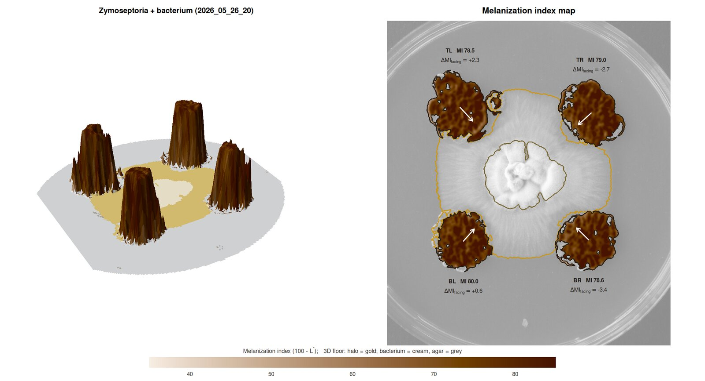

Colour-calibrated quantification of fungal melanization in confrontation assays
MycoHalo measures the melanization of Zymoseptoria tritici colonies inoculated at fixed positions on a Petri dish, either alone (controls) or confronted with a bacterium in the centre. It gives you per-colony size and shape, a calibrated melanization index with confidence intervals, edge-to-centre melanization profiles, side-specific melanization facing the bacterium, growth inhibition, halo geometry, and a quality-control figure for every plate.

Grey fungal colonies, the cream-white bacterial colony and its yellowish diffusion halo overlap in grayscale brightness, and strongly melanized colonies can have almost the mean colour of dark agar. MycoHalo therefore:
# install.packages("remotes")
remotes::install_github("mghotbi/MycoHalo", build_vignettes = TRUE)MycoHalo contains C++ code (Rcpp). On macOS this needs the Xcode command line tools (xcode-select --install), and on Windows it needs Rtools. There is no Bioconductor dependency.
library(MycoHalo)
# confrontation plate: TL, TR, BR, BL Zymoseptoria + central bacterium
res <- analyze_plate("2026_05_26_20.JPG")
plot_qc(res) # always inspect
plot_melanization_map(res) # 3D landscape + 2D melanization map
res$colonies # one row per colony
res$profiles # edge-to-centre rings
res$plate_summary # scale, bacterium, halo, QC
# control plate
ctrl <- analyze_plate("2026_05_26_37.JPG", layout = plate_layout(centre = "none"))
# a whole experiment: 1) metadata sheet, 2) batch analysis
make_metadata("photos", treatment = "bacteria", patterns = c(control = "ctrl"))
# -> edit photos/plate_metadata.csv (treatment = "control" for plates without bacterium)
meta <- read.csv("photos/plate_metadata.csv")
out <- analyze_plates("photos", metadata = meta, layout = layout_by_treatment, qc_dir = "qc")
out$colonies <- correct_facing_bias(out$colonies)
compare_melanization(out$colonies, group = "treatment", reference = "control")A ready-to-edit lab script and metadata template:
file.copy(system.file("scripts", c("analyse_experiment.R", "plate_metadata_example.csv"),
package = "MycoHalo"), ".")Try it without photos:
sim <- simulate_plate(seed = 1)
res <- analyze_plate(sim$image)
plot_qc(res)
MI_mean (± block-bootstrap CI) |
melanization index = 100 − L* (higher = darker) |
gray_imagej |
mean grey value as in ImageJ/Fiji, for comparison with older data |
delta_MI_facing |
melanization of the colony half facing the bacterium − the opposite half |
growth_inhibition_pct |
percent inhibition of radial growth towards the bacterium |
gap_halo_mm, halo_outer_radius_mm, halo_delta_b
|
halo contact and geometry |
area_mm2, circularity, solidity
|
colony size and shape |
Validated on simulated plates with known ground truth across 13 scenarios (vignetting, exposure error, very dark colonies, touching colonies, missing colonies, halos over colonies, noise). Colony area is within ~2.2 % (typically < 1 %) and melanization within 0.9 L* units, and missing colonies are reported rather than invented. See vignette("MycoHalo") and inst/validation/. The pipeline has also been checked on real Z. tritici control and bacterium-confrontation photographs.
Use a copy stand, diffuse light, manual exposure and white balance, a dark matte background, a small 18 % grey card in every photo, and a mark at 12 o’clock on each dish. See section 2 of the vignette.
Ghotbi M. MycoHalo: colour-calibrated quantification of fungal melanization in confrontation assays. R package version 0.1.0. https://github.com/mghotbi/MycoHalo